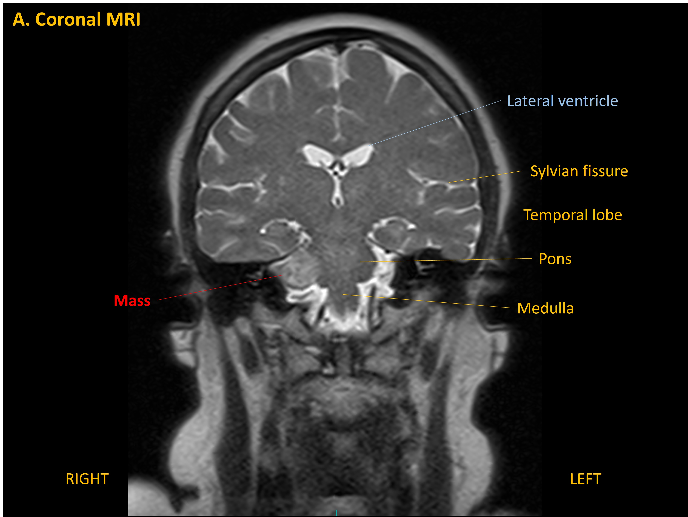
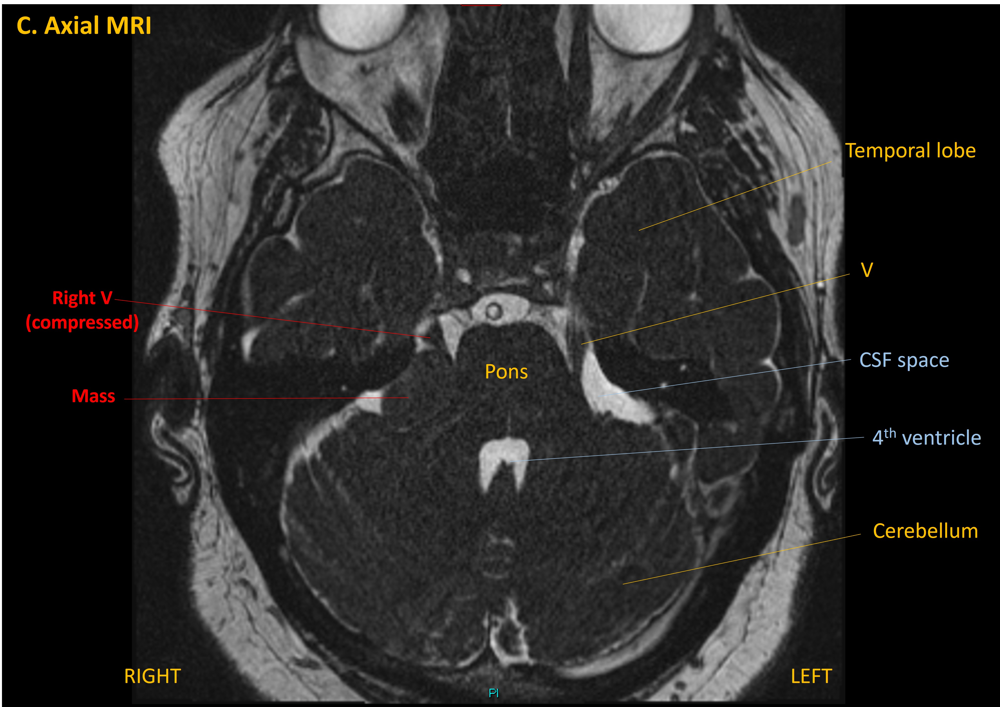

Case 21 - Facial numbness and hearing loss
Outcome
An MRI showed a right cerebellopontine angle mass. Imaging features suggested a vestibular schwannoma, with extension from the internal acoustic meatus.

There was compression of the trigeminal nerve higher up.
The diagnosis was explained, including that this was a slow-growing lesion which had likely been present for some time.
A surveillance approach was taken at first. Interval imaging at 1 year showing minimal growth (1mm enlargement in each plane). While this was considered minor, she was given options - continued interval imaging surveillance, or radiotherapy. Radiotherapy would offer some control over lesion enlargement but pose a small (<5%) risk of worsening her symptoms, including causing facial weakness and worsening her hearing loss. It was also explained that it would not improve her existing symptoms - just attempt to slow tumour growth.
She chose to undergo stereotactic radiotherapy. She tolerated this well, but did develop troublesome neuralgic facial pain and dysaesthesia, treated with neuropathic pain medications.
At the time of writing she awaits a 1 year post-radiotherapy MRI scan, but remains neurologically stable.
Key points